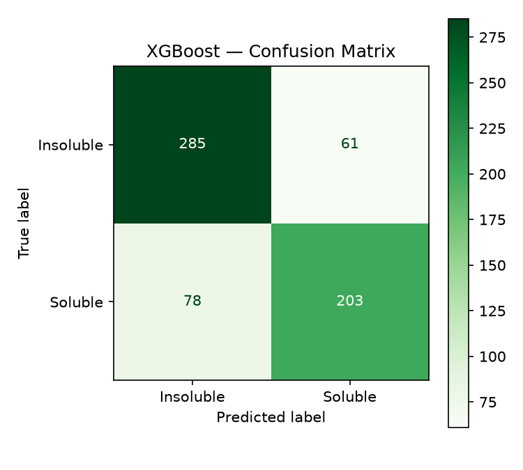
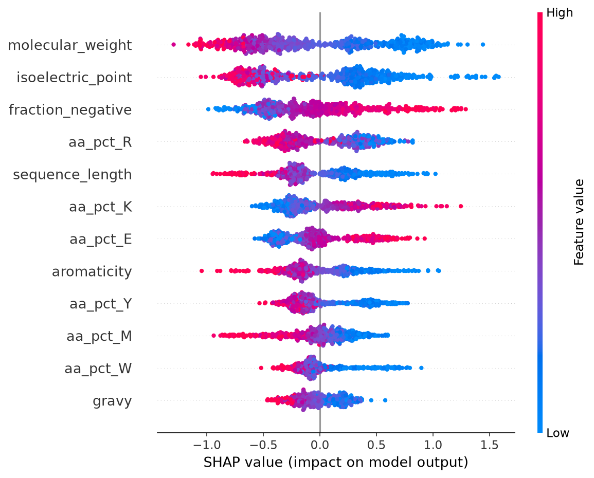

Roughly a third of proteins expressed in E. coli misfold into insoluble aggregates — a discovery scientists usually make only after cloning, expressing, and lysing. The eSOL dataset (Niwa et al., 2009/2012) measured real solubility for the entire expressible E. coli K-12 proteome. We trained a classifier on it, paired with SHAP explanations and a fusion-tag advisor — so a prediction reads as a lab decision, not just a label.
{{ predictError }}
Swap one residue in the last-predicted sequence and see how the probability shifts.
Search the 3,133-protein dataset by gene name or b-number, and compare the model's prediction against the real measured solubility.
Paste multiple sequences, FASTA-style (a >header line above each sequence). Every protein gets a verdict and, if insoluble, a tag recommendation.
| Label | Prediction | P(soluble) | Tag |
|---|---|---|---|
| {{ r.label }} | {{ r.predicted_label }} | {{ r.probaText }} | {{ r.tag }} |
| Model | Accuracy | F1 | ROC-AUC |
|---|---|---|---|
| Logistic Regression | 76.2% | 0.730 | 0.841 |
| Random Forest | 78.5% | 0.745 | 0.855 |
| XGBoost (selected) | 77.8% | 0.745 | 0.858 |

